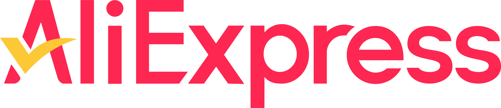

AliExpress je kineska internetska trgovina koja omogućava poduzećima iz Kine i drugih zemalja prodaju proizvoda međunarodnim kupcima putem interneta. Platforma je u vlasništvu Alibaba Group, jednog od najvećih svjetskih konglomerata u elektroničkoj trgovini.[1] Pruža pristup širokom spektru proizvoda, uključujući odjeću, elektroniku, kućanske aparate, kozmetiku i još mnogo toga. Korisnici mogu naručivati proizvode izravno od proizvođača, što često omogućava niže cijene u usporedbi s lokalnim trgovinama. Za razliku od mnogih drugih platformi za internetskih trgovina, poput Amazona, AliExpress ne prodaje proizvode izravno, već djeluje kao posrednik između prodavača i kupaca, slično kao eBay. Prodavači su obično neovisni poduzetnici ili mala poduzeća, koja koriste AliExpress za dosezanje globalne publike.[2] AliExpress je izuzetno popularan na tržištima izvan Kine, posebno u Rusiji, gdje je jedna od najposjećenijih web stranica te u Brazilu, gdje se ubraja među deset najposjećenijih internetskih trgovina.[3] Platforma je dostupna na više jezika, uključujući engleski, španjolski, francuski i ruski, čime se dodatno olakšava kupovina na globalnom tržištu.[4] Također, nudi različite oblike zaštite kupaca, poput povrata novca u slučaju da proizvod ne stigne ili ne odgovara opisu, čime nastoji izgraditi povjerenje kod svojih korisnika.
Ako tražiš kvalitetnu elektroniku po pristupačnim cijenama, onda je AliExpress pravo mjesto za tebe! Na ovom popularnom online tržištu možeš pronaći širok izbor elektroničkih uređaja, od pametnih telefona i laptopa do pametnih satova, slušalica, televizora i drugih gadgeta. S brojnim brendovima i modelima, sigurno ćeš pronaći nešto što odgovara tvojim potrebama i budžetu. Uz jednostavnu i sigurnu kupovinu, AliExpress nudi i povoljne cijene te često promocije i popuste, pa možeš uštedjeti i na dostavi! Kupovina je jednostavna, a mogućnosti plačanja prilagođene su kupcima iz cijelog svijeta. Ako želiš iskoristiti priliku za kupnju najnovije tehnologije po najboljim cijenama, posjeti AliExpress i otkrij što sve imaju u ponudi!
Ako tražiš stilsku, modernu i povoljnu odjeću, AliExpress je pravo mjesto za tebe! Na ovom popularnom online tržištu možeš pronaći širok asortiman odjeće za svaki ukus – od elegantnih haljina i odijela, do casual komada poput majica, traperica, jakni i obuće. S različitim stilovima, veličinama i bojama, sigurno ćeš pronaći nešto što odgovara tvom osobnom stilu. AliExpress nudi odjeću po vrlo povoljnim cijenama, a uz to često ima i atraktivne popuste i akcije. Kupovina je jednostavna i sigurna, s opcijama plačanja koje su prilagođene kupcima iz cijelog svijeta. Ne zaboravi da se redovito ažurira ponuda, pa uvijek možeš pronaći najnovije modne komade na samo nekoliko klikova. Posjeti AliExpress i osvježi svoj ormar uz fantastične cijene i trendi odjeću!